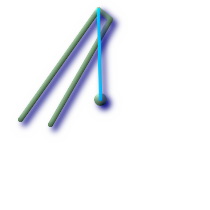
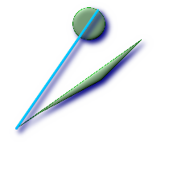
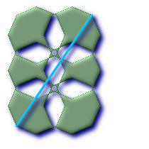

ST_LongestLine — Returns the 2-dimensional longest line points of two geometries. The function will only return the first longest line if more than one, that the function finds. The line returned will always start in g1 and end in g2. The length of the line this function returns will always be the same as st_maxdistance returns for g1 and g2.
geometry ST_LongestLine(geometry
g1, geometry
g2);
Returns the 2-dimensional longest line between the points of two geometries.
Availability: 1.5.0
 Longest line between point and line
SELECT ST_AsText(
ST_LongestLine('POINT(100 100)'::geometry,
'LINESTRING (20 80, 98 190, 110 180, 50 75 )'::geometry)
) As lline;
lline
-----------------
LINESTRING(100 100,98 190)
|  longest line between polygon and polygon
SELECT ST_AsText(
ST_LongestLine(
ST_GeomFromText('POLYGON((175 150, 20 40,
50 60, 125 100, 175 150))'),
ST_Buffer(ST_GeomFromText('POINT(110 170)'), 20)
)
) As llinewkt;
lline
-----------------
LINESTRING(20 40,121.111404660392 186.629392246051)
|
 longest straight distance to travel from one part of an elegant city to the other Note the max distance = to the length of the line.
SELECT ST_AsText(ST_LongestLine(c.the_geom, c.the_geom)) As llinewkt,
ST_MaxDistance(c.the_geom,c.the_geom) As max_dist,
ST_Length(ST_LongestLine(c.the_geom, c.the_geom)) As lenll
FROM (SELECT ST_BuildArea(ST_Collect(the_geom)) As the_geom
FROM (SELECT ST_Translate(ST_SnapToGrid(ST_Buffer(ST_Point(50 ,generate_series(50,190, 50)
),40, 'quad_segs=2'),1), x, 0) As the_geom
FROM generate_series(1,100,50) As x) AS foo
) As c;
llinewkt | max_dist | lenll
---------------------------+------------------+------------------
LINESTRING(23 22,129 178) | 188.605408193933 | 188.605408193933
|